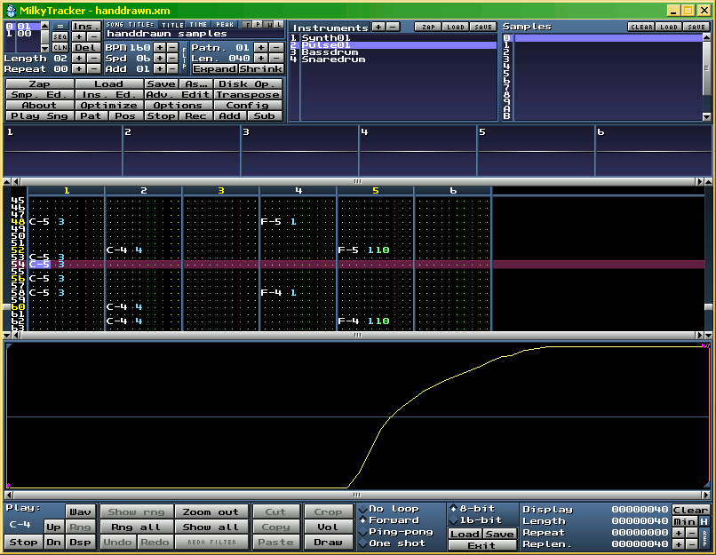

Jetzt geht es also los mit einem ersten kleinen Song!
Bitte starten Sie Milky neu oder löschen den ganzen Song wie gewohnt mit 'Zap'.
laden Sie nun bitte auf Position '01' der Instrumentenliste das Instrument 'Synth01.xi', welches hier zu finden ist: -> Demo Dateien herunterladen. Stellen Sie danach im Instrumenteneditor die Werte wieder so ein wie
Wir es bei Unserem Beispielinstrument vorhin gemacht haben ( 'Vibspeed' auf '10', 'Vibdepth' auf '4' und 'Vibsweep' auf '8' ).
Dann erstellen Sie bitte auf Position '02' der Instrumentenliste ein neues Sample ( Sampleeditor und rechter Mausklick und New ).
Zeichnen Sie nun bitte eine Wellenform, die derjenigen im folgenden Bild gleicht:

Bild: Chipsample zeichnen
Benennen Sie nun noch ihr neues Instrument mit 'Pulse01' ( rechter Mausklick ins Namensfeld bei '02' ) . Return beendet die Nameneingabe.
Auch braucht unser Instrument 'Pulse01' noch einige Einstellungen. Bitte stellen Sie 'Vibspeed' auf '08', 'Vibdepth' auf '4' und 'Vibsweep' auf '06'.
Wenn Sie den Pulse01 nicht so gut hinbekommen haben, können Sie alternativ auch 'Pulse01.xi' einladen auf Position '02'.
Nun noch schnell 'Bassdrum.xi' auf Position '03' und 'Snaredrum.xi' auf Position '04' laden.
Nicht vergessen nach jedem wichtigen Schritt zu speichern! Das geht mit einem Klick auf 'As...' im Milkymenü. Wählen Sie dann bitte einen
aussagekräftigen Namen für Ihren ersten Song, zum Beispiel 'erster_Milkysong01.xm'. Sobald der Song einmal gespeichert wurde, wie eben gezeigt, reicht bei erneutem
Speichern ein Klick auf 'Save' links neben 'As...'. Ich würde aber empfehlen nach jedem großen Schritt wieder unter einer fortlaufenden Nummer zu speichern, zum Beispiel:
'erster_Milkysong02.xm', 'erster_Milkysong03.xm' usw.
Da Wir nun alle Samples bzw. Instrumente haben, die Wir brauchen, kann es losgehen mit der Noteneingabe. Leertaste oder ein Klick auf 'Rec' aktiviert den Aufnahmemodus.
Die zum Cursor gehörende Zeile wird rötlich. Wählen Sie nun bitte die 'Bassdrum' aus ( Instrumentenliste ) und drücken die Taste 'y' auf Ihrer PC Tastatur. Aha, Milky hat Uns nun
eine Note C-4 mit der Bassdrum auf die aktuelle Position gesetzt. Löschen Sie bitte nun auch diese Note wieder mit einem Druck auf die Taste 'Entf' Ihrer PC-Tastatur.
'q' ist die Note C-5, also eine Oktave höher. Geben Sie nun bitte mit der Taste 'q' ( Note C-5 ) Bassdrumschläge auf die Positionen: 00, 08, 16, usw. ein, bis nach unten auf Position '56'
von Spur1 ( Die Spalte ganz links ) . Nun wählen Sie bitte die 'Snaredrum' aus und geben mit der Taste 'y', also Note C-4
Snaredrumereignisse auf die Positionen: 04, 12, 20 usw. bis unten auf Position '60' auf Spur2.
Nun hören Sie sich bitte das Eingegebene mal an mit einem Klick auf 'Play Sng'. Bei richtiger Eingabe der Noten sollte alles so aussehen wie in 'tutorial01.xm', also noch sehr monoton.
Laden Sie nun bitte 'tutorial02.xm', um sich anzusehen, wie man eine Variation zu Unserem Rhytmus gestalten kann. Klingt schon interessanter, nicht wahr?
Ich habe auch direkt mal das Tempo auf 160 BPM raufgesetzt, damit es etwas schneller abgespielt wird. Wenn Sie einen weiteren Song nebenher bearbeiten oder ansehen wollen, können Sie
in Milky sogenannte 'Tabs' verwenden. Drücken Sie bitte dazu die Tasten 'Strg', 'Shift' ( temporäre Großschreibetaste - über 'Strg' ) und 't'
zugleich. Unten im Milky erscheint nun der neue Tab, den sie auch gleich anwählen können mit der linken Maustaste. '+' und '-' fügt weitere
Tabs hinzu bzw. löscht den aktuellen Tab bei Bedarf.
Bild: Tabs in Milky
Bitte laden Sie, wie im Bild gezeigt, 'tutorial02.xm' in den ersten Tab und 'handdrawn.xm' in den zweiten Tab. Nun können Sie immer Ihre Eingaben in Milky mit dem vergleichen,
was nacher im fertigen Song dabei heraus kommen soll.
Da Unser Schlagzeug-arrangement nun fertig ist, können Wir auch gleich die Melodie eingeben. Vorher aber kurz eine Grafik, die Uns
zeigt, wo welche Noten versteckt sind, hinter welchen Tasten:
Bild: Klaviatur
Geben Sie nun bitte auf Spur3 nd Spur6 ganz oben jeweils eine Taste '<>|' hin ( links neben 'y' ); das ist Unser 'Note-Aus---Balken'.
Wechseln Sie jetzt auf die grünen Punkte, sprich auf den ersten grünen Punkt bei Spur3. Geben Sie bitte eine '0' ( Null ) ein; es sollte nun eine grüne '00'
zu sehen sein - das Gleiche machen Sie noch mit Spur6. Danach wählen Sie 'Synth01' aus und geben die Noten auf Spur4 ein, wie in 'handdrawn.xm' zu sehen.
Jetzt wird es trickreich: Wir wählen nun mit der Linken Maustaste die ganze Spur4 aus ( Klicken, halten und ziehen ) - Spur4 sollte bläulich sein. Nun ein Rechter Mausklick
auf die Spur4 und 'Copy' wählen. Anschliessend nach Spur5 wechseln mit dem Cursor und zwar auf Position '04' im Noteneingabebereich ( Wo sonst die Noten hin kommen, wie C-4 usw. ).
Rechter Mausklick auf den Cursor und 'Paste' wählen. Jetzt sollte es schon so ähnlich aussehen wie in 'handdrawn.xm' - Pattern01 ( Position 0 ).
Ändern Sie nun noch die Lautstärke jeder Note bei Spur5 auf eine '10' - ersten grünen Punkt anvisieren mit dem Cursor und '1' drücken auf der Tastatur.
Markieren Sie nun bitte Alles, was in den ersten 6 Spuren zu sehen ist ( vorher speichern nicht vergessen ) und wählen 'Copy' wie gewohnt.
Daraufhin klicken Sie oben im Milkymenü auf 'Ins.' - ist schräg links über der BPM-Einstellung. Jetzt haben Wir zwei Patterns mit Nummer '00' - wählen Sie
die '1' aus in der kleinen Liste links oben im Milkymenü ( wo die beiden '00' sind ) und geben anschliessend einen Klick auf '+' unter 'Ins.'. Damit haben Wir nun
zwei Patterns ( ein Pattern ist eine solche ganze Seite mit Musikinformationen ), das erste ( 0 ) mit Pattern '00' und das zweite ( 1 ) mit Pattern '01'.
Weiter geht es mit einer Cursorausrichtung auf '00' in der Spuransicht ( Spur1 ). Jetzt wählen Sie im Minimenü ( rechte Maustaste ) 'Paste' -
es sollte nun Alles so aussehen, wie in 'tutorial03.xm'. Vergleichen Sie ruhig, indem Sie 'tutorial03.xm' in einen neuen Tab laden.
Einmal auf 'Sub' geklickt, und die unnötigen Spuren sind weg ( 7 und 8 ). Nun haben Wir 6 Spuren übrig - geben Sie nun selbstständig den Rest ein, wie in 'handdrawn.xm' gezeigt.
Kleine Tipps am Rande:
1.) Um in eine niedrigere oder höhere Oktave zu wechseln ( Oktave = von C-4 bis c-5 beispielsweise, also von einem 'C' zum nächsten 'C' )
, drücken Sie eine der F-Tasten. Experimentieren Sie ruhig mit den F-Tasten, F1, F2, F3, F4, F5, F6 und F7 herum;
2.) Um den Triller-effekt ( 047 ) einzugeben, gehen Sie zuerst auf den ersten Gelben Punkt der Spur6 ( nach Eingabe der Noten und Lautstärke ) und geben dort eine '4' ein
bis ganz nach unten, danach auf den zweiten gelben Punkt gehen und die '7' eingeben;
3.) Damit der Lautstärkewechsel auf Spur6 schneller eingegeben ist, können Sie bei 'Add' im Milkymenü eine '02' einstellen - nicht vergessen nacher wieder auf '01' einzustellen.
Wenn noch Fragen sein sollten, gebe ich gerne Auskunft und fasse die entstandenen Fragen vielleicht auch in eine FAQ zusammen ( FAQ = Häufig gestellte Fragen ).
Viel Spass nun beim Musizieren und möge der Kreative Ohrwurm mit Ihnen sein .